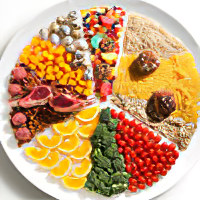
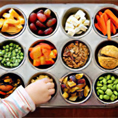
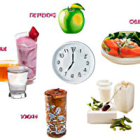
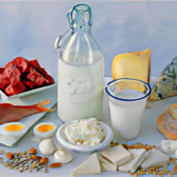
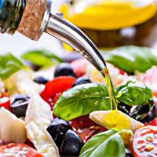

Лёгкие диеты
Диета для ускорения метаболизма Хейли Помрой

Срок: 28 дней. Результат: от -9 кг. Суть: если вы должны сильно похудеть, голодание – это
последнее, что вы должны делать. Вам нужна пища, чтобы разжечь ваш метаболизм. Чем больше вы
весите, тем больше вам нужно есть!
Диета воина

Срок: 30 дней. Результат: -2-3 кг. Суть: суть диеты воина очень проста, она вытекает из ее
названия. У воинов не было времени и возможности кушать что-то в течение дня, они
перехватывали еду на ходу.
Диета ПП

ПП - это аббревиатура «правильное питание». С помощью ПП можно отрегулировать обменные
процессы в организме и похудеть. При этом не потребуется мучить свой организм изнурительными
голодовками.
Кето диета

Срок: от 14 дней. Результат: от -5 кг. Суть: если человек получает недостаточное количество
углеводов, печень начинает продуцировать кетоновые тела из жирных кислот, которые являются
альтернативным источником энергии. В результате, изменяется баланс жиров, белков и
углеводов, что позволяет запускать процесс сжигания жиров.
Средиземноморская диета

Срок: 30 дней. Результат: -5 кг. Суть: Средиземноморскую диету нельзя назвать инструкцией,
которой необходимо следовать, чтобы похудеть. Скорее, это пищевые традиции и привычки,
которым привержены жители Средиземноморья.